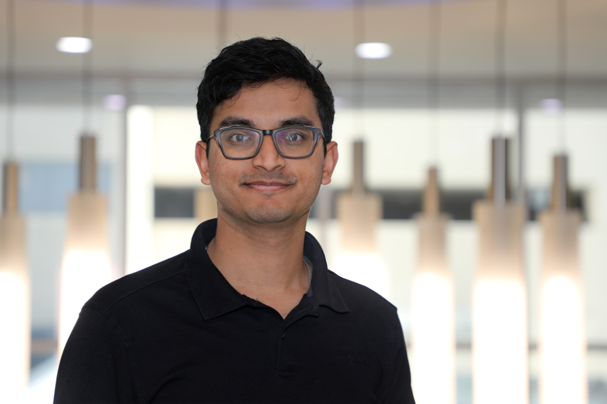

Aryan Gupta
Applied physicist and research engineer building AI and scientific-computing systems for physical-world modeling, evaluation, and automation.
I build tools for problems where physics, data, AI, and engineering practice meet: carbon-capture models, robotics energy measurement, LLM evaluation infrastructure, and engineering workflows that need to be checked rather than merely demonstrated.
About
Most of my work starts with a stubborn measurement problem. Can a carbon-capture simulation be checked against experiments? Can a learned thermodynamics model fail in a way we can name? Can a robot workload report energy in units that survive comparison? I like projects where the answer has to be coded, tested, and written down clearly enough for someone else to rerun it.
At Technip Energies, I have worked across carbon-capture R&D, MD/DFT simulation, image-analysis pipelines, instrumentation and controls engineering, and AI-assisted EPC workflows. I also co-founded and co-lead an Americas AI initiative focused on turning engineering pain points into scoped, reviewable AI pilots.